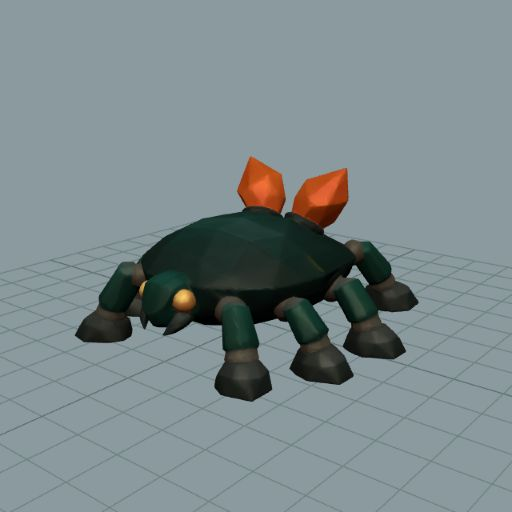
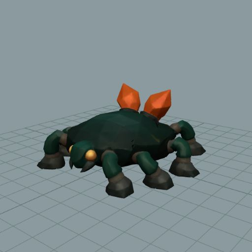
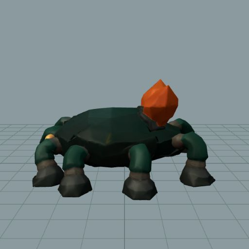
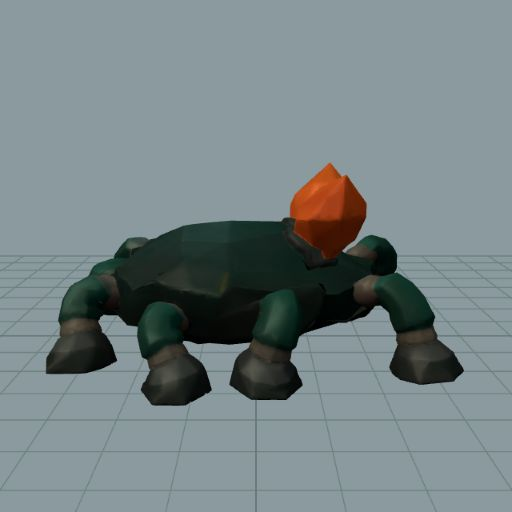
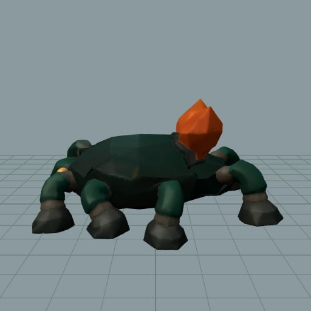
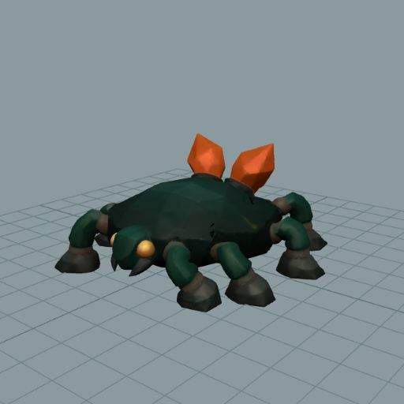
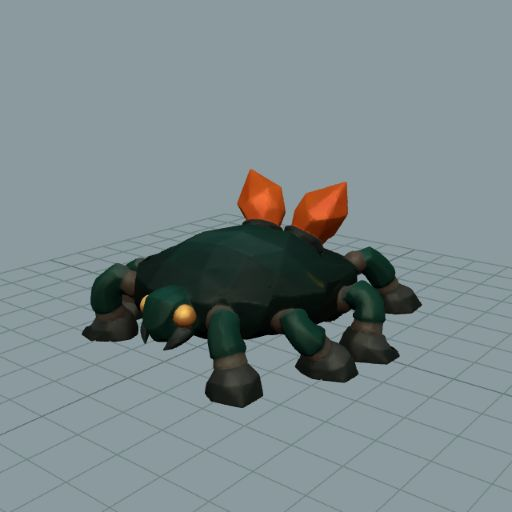
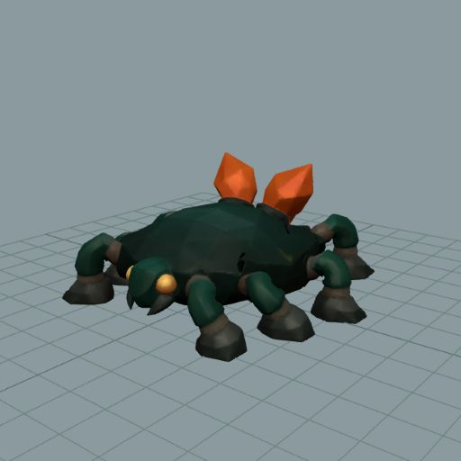

Retained as a fitted-rig feasibility candidate. The actual model has eight legs, four per side. A 29-bone fitted rig now drives a complete 1.1-second alternating four-foot diagnostic. These are screenshots of the exported textured GLB in Three.js, not generated concept art. It is not yet registered, spawned, or admitted to game locomotion.


Play the actual GLB diagnostic · Independent visual review · Source comparison and full-cycle surface measurements · TRELLIS master and simplification · Species dossier
Selected moments from both complete nine-frame visual sequences; all 34 authored gait samples also have exported surface measurements. In-place motion only. Authored travel speed is provisional, approximately 0.212 m/s; translated gameplay motion remains to be tested.






The source surface and UVs survived export: maximum neutral surface discrepancy 0.000000416 m, UV error zero, 59,376 triangles retained. Export split 40 extra vertices (40,908 total); that is not added geometric detail. Planted sole samples stay within 8.35 mm of the floor; each foot travels at least 13.8 cm and the sampled loop closes exactly. Browser playback rendered without logged errors.
Remaining work: gray cuff seams, blocky hooves and upright fronds remain visible art debt. Foot sliding during real travel, transition behavior, runtime placement, collision and the full gameplay clip set are unproven. Preserve this useful fit rather than rebuilding the TRELLIS animal.
The first worker probe scaled the mesh without fitting its bones and animated only body bob; it was preserved as invalid. Its replacement source was held before export. The root-owned fitted build stopped once on real rear-leg reach, which was corrected through measured body compression. Its GLB exported successfully; a later overly strict vertex-count equality check stopped. A separate read-only inspection verified unchanged surface, UVs, skeleton, clips and evaluated gait on that exact GLB. No regeneration or simplification followed.
Measured rig plan and amendment · Source review history · Live Three.js playback receipt